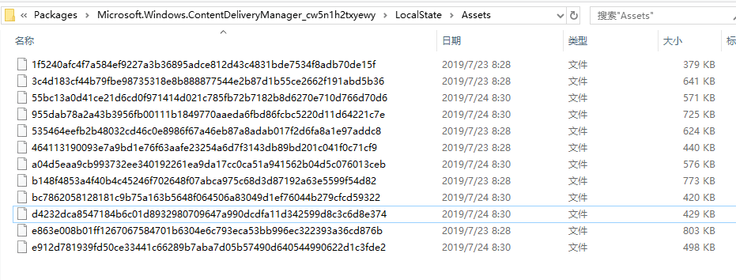
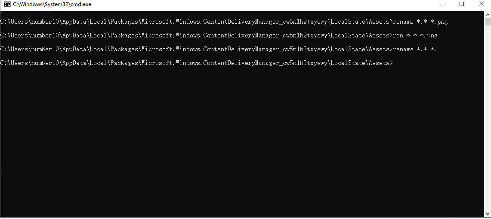

第1节：win10屏保
1、屏保储存地点
C:\Users\number10\AppData\Local\Packages\Microsoft.Windows.ContentDeliveryManager_cw5n1h2txyewy\LocalState\Assets
Users 即 用户
number10为用户名
如下图，是没有后缀的文件

2、win10 cmd 批量更改文件后缀 ren/rename命令
进入目录所在处，在导航栏处输入cmd. 回车后即直接打开了位于当前目录的cmd,执行
rename *.* *.png ren *.* *.png若想去掉后缀
ren *.* *.